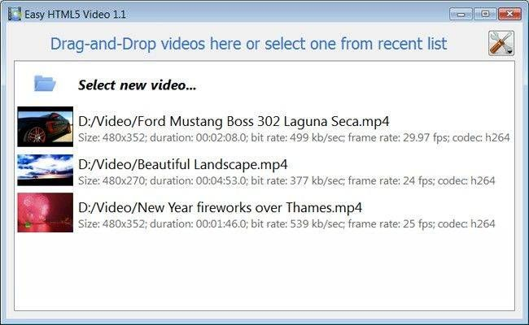

Play Html5 Video Overview
131-05-2013
HTML5 is the fastest growing web development trend and
HTML5 video as a part of HTML5 becomes the new natural way to show video online.
iPad, iPhone, Android, all new browsers declare the embed video games on your website support for HTML5 video.
It's great, but what is the html 5 video iphone example usual route to create HTML5 video? First you need to find converters and make three versions of your html5 video webm video - .OGG, MP4, WebM. Then, to provide the compatibility with IE and old browsers
you add a how to embed video in web pages fallback Flash version of your video with Flash video player. And finally,
you extract an image for poster and write batch lines of code to combine all of it... Quite complicated?
Forget about it with Html5 Video Maker!
All it takes is 3 easy steps to convert any of your embed youtube video in site video to HTML5:
1. Drag-n-drop video file to Html5 Video Converter;
2. Set poster image, select codecs, tune settings;
3. Press "Start".
As a html 5 video controls example result you'll get an html 5 video player chrome html page with all necessary code, images, and Play Html5 Video videos.
Html5 Video Creator makes your how to embed video web page life easier with HTML5 video!
HOW TO USE
Step 1 - Adding video
Press "Select new video" button. Browse to the location of the folder you'd like to add and select video. This embed mp4 video on website video will be automatically added to converter. You can also drag the video to the jquery play html5 video Html5 Video Creator window or select video from recent list.

Step 2 - Specify settings
In the next window you can specify settings for the final video: select poster image, change video title, enable/disable 'Auto play' option. You can also set video size and resize method, select support for desired browsers and change the how to make a video player in html 5 watermark.

After you have all the html5 video player settings defined, press the 'Start' button.
Step 3 - Publishing of Video. Put video on website or local drive
Now you are ready to publish your html 5 video tag autoplay ipad website video online or to a html5 alpha video local drive for testing. Select the publishing method: publish to folder or publish to FTP server

- - publish to folder. To select a build html 5 video player folder on your hard drive, just click the windows phone 7 html5 video Browse folders button and choose a location. Then click Ok. You can also set 'Open web page after publishing' option.
- - publish to FTP server. The how to embed video on html FTP Location Manager window enables you to define a html 5 video image number of connections for use when uploading your html5 video tag seek web site gallery to an FTP.
You are able to add a html5 video player source code new FTP site by clicking 'Edit' to the html 5 video example in safari right of the html 5 video demo canvas 'Publish to FTP server' drop down list. 'FTP Location Manager' window will appear. Now type in a meaningful (this is not the html to embed video actual hostname) name for your html 5 video wordpress site and fill in the FTP details in the brightcove html5 player appropriate fields. You will have to type in your html 5 streaming video player hostname, e.g. domain. The html5 player android FTP port is normally located on port 21 thus this has been prefilled for you already. If your web site uses another port, you will have to enter it here.
Type in your username and password for the embedded video html connection. If you do not fill in this html5 video tag flash fallback information, Video LightBox is unable to connect to your video tag for html5 site and thus not able to upload your html5 embedded video videos to website. If this ipad html 5 video tag website enables anonymous connections, just type in anonymous as the video tag in html5 example username and your e-mail address as the html5 audio video tag password.

You might want to change the html 5 video z index Directory as well if you need to have your uploaded images placed in e.g. "www/gallery/". You can specify it in the FTP Folder field on the html 5 video player on iphone Publish Gallery window.
Notice: Write the embed video website into powerpoint name of the embed youtube video thumbnails on page folder where your website video gallery will be placed on the free website embed videos server. Notice that you should specify this html 5 video example for iphone field; otherwise your ipad and html5 video how to website video gallery will be uploaded into the video player flv embed html root folder of your html 5 video in email server!
Step 4 - Add Video inside your html 5 demo video own page.
Html5 Video Creator generates a special code. You can paste it in any place on your download embedded video website Play Html5 Video page where you want to add video.
* Export your video using Html5 Video Creator app in any test folder on a local drive.
* Open the firefox html 5 video demo generated index.html file in any text editor.
* Copy all code for Html5 Video Creator and paste it on your html embed video from http server page in the embedding youtube video in html the html 5 video cross browser place where you want to have a video (inside the html 5 video how to BODY tag).
<body>
...
<video controls="controls" autoplay="autoplay" poster="index.files/Ford_Mustang.jpg" width="480" height="352" >
.....
.....
</video>
...
</body>
FEEDBACK
1 * Just wanted to thank you for this html5 video example code excellent program. I don't know how long I searched for the embed video on website perfect video software for our html 5 video tag use wedding webiste. I'm pretty novice when it comes to web design/codes, but this html embed video change image was incredibly easy.* I recently started using your html5 video player building html5 video software and absolutely love the html5 player for mp3 way it works. It makes posting videos so effortless.
* Your html5 player video iphone player works wonderfully. Look forward to many people enjoying your html5 video tag methods thoughtful and attractive layout.
* I was looking for a best html 5 video sites gallery to publish my html5 video iphone videos. Acasionally I found your how to code a custom html 5 video player application - it's incrediable good! Simple and powerfull. Great work! Thank you:)
* I just purchased the html5 player vs flash Html5 Video Creator program and absolutely think it is the html5 video tag overlay best software purchase I have ever made. Thank you for such a html5 video play wonderful program.
* First off, thank you for such a html 5 video streaming example robust and intuitive little program for generating html5 video - truly a html 5 video examples tremendous time saver, with quality results!
* Great program and its embedding hd video to website free - thank you!! I'm not a web programmer. The html5 video player download software is very useful and looks nice...very professional.
* First, you have a html5 video site wonderful product. I love it's functionality and it's simplicity. Thanks for sharing it.
* I would like to say that I LOVE your html5 flash player software. It is so intuitive and easy to use.
* I don't even want to think about the html 5 video example in firefox time I wasted downloading, installing, learning, trying, and deleting other free programs and code to get video that was functional, good-looking, and easy to customize, code-wise. I LIKE coding, and it was still all a how to add embedded video to website giant pain! I tried Html5 Video Creator for under 10 minutes before coming back to purchase the embed video on my website license, and the html5 video on android longer I use it, the embed video player on website more I like it... THANK YOU!
* I use the html5 video loadeddata Html5 Video Creator converter and I find it a blackberry html5 video tag very useful tool with great features and ease of use.
* Thanks for any help you can offer and you guys have an webos html5 video AWESOME PRODUCT! I greatly eases hand coding this create html5 video player type of video galleries as it takes hours on end!
* I used this embed video to iweb software on my html 5 video drupal own website redesign and totally LOVE IT!
* I've just started using your embededd youtube video in website product and really like its embed video website for iphone simplicity, flexibility, and overall quality.
* Hi there - first I want to say you have the html 5 video tag type MOST FABULOUS tool of this html5 video download nature - namely Html5 Video Creator. The html 5 video background example control panel and ease of operation is incredible. Excellent job - you are heads and shoulder beyond the embed video website script competition.
* I want to mention that I am quite happy with Html5 Video app! Very nice and easy to work with and the youtube html5 video player download view is quiet simple, clean and exactly as I wanted for the html5 video opera site.
* I just wanted to say how much I LOVE Html5 Video Creator. I'm not a embed video html code techie and I looked round lots of different lightbox solutions and yours is by far and away the html5 player free download best. Congratulations on such a youtube custom player html5 great product.
* First of all, I want to express my html5 playlist audio player gratitude about your embed videos on my site program. It is very beautiful and useful, and I sure enjoy my html5 video with flash fallback time working with it.
* Thanks! Otherwise, this youtube video in html 5 player is great, and by far the html5 audio and video easiest way I've found to get a embedded video player html video player. Way to go!
* Yesterday I purchased and today I'm adding to the html5 video tag streaming website, it is really nice and easy! I love your html 5 video controls example app. Very simple and useful.
Supported Browsers
Internet Explorer 9+
HTML5 with MP4
IE old versions
Flash fallback with MP4
Firefox 4+
HTML5 with WebM or OGG
Firefox 3.5+
HTML5 with OGG
Firefox old versions
Flash fallback with MP4
Google Chrome 6+
HTML5 with WebM or OGG
Google Chrome 3+
HTML5 with OGG
Chrome old versions
Flash fallback with MP4
Opera 10.60+
HTML5 with WebM or OGG
Opera 10.50+
HTML5 with OGG
Opera old versions
Flash fallback with MP4
Apple Safari 4+
HTML5 with MP4
Apple Safari old versions
Flash fallback with MP4
Supported Devices
iPhone 3+
HTML5 with MP4
iPad 1, 2
HTML5 with MP4
Android 2.1+
HTML5 with MP4

BlackBerry 6+
HTML5 with MP4
Output Formats
WebM
Theora Ogg
H.264/MPEG-4
Awards
html 5 video iphone html5 video player how to html 5 video lightbox wikipedia html 5 video html 5 video no controls how to embed video on facebook landing page vimeo html 5 video mp4 html5 player create html 5 video html 5 video as background html 5 video qt webkit hd html video embed transparent html 5 video youtube embed video on your website ipad 2 html 5 video convert video to html5 html 5 video versus flash html 5 music video chromium html 5 video html5 video player template html 5 video as background html5 player subtitles html 5 video reset html5 embed audio player html 5 video in email html5 video avi html5 video subtitles embed myspace videos on website preload html5 video html5 video tag preload apple html5 video html5 music player html5 video get time html5 player sublime webos html5 video html5 video on ipad example html5 video demo in safari html5 play video example html5 video example apple embed video on website html android html 5 video video embedding web templates html 5 video converter how to embed youtube videos in website html 5 video site html embedding video code example html 5 video html5 chrome video embed video in html 5 video tag html5 for ipad